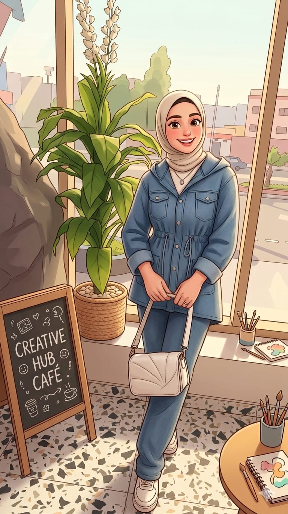

About Me

I am a passionate QA Engineer with a unique background in Agricultural Engineering. I specialize in ensuring software reliability through manual and automated testing, with a focus on Agri-Tech innovation.
My Featured Work
In Development
Agri-Tech Testing Project
A specialized application combining Agricultural Engineering with Software Testing. Designed to ensure precision in crop diagnosis using automated verification.
Agri-Verify Pro
Analyzing Crop Health...

QA Validation:
PASSED
Technical Arsenal
Manual Testing
Automation (Selenium)
Java Programming
API Testing (Postman)
Bug Reporting (Jira)
Full Stack Basics
Agile Methodology
0
Bugs Found
0
Test Cases Written